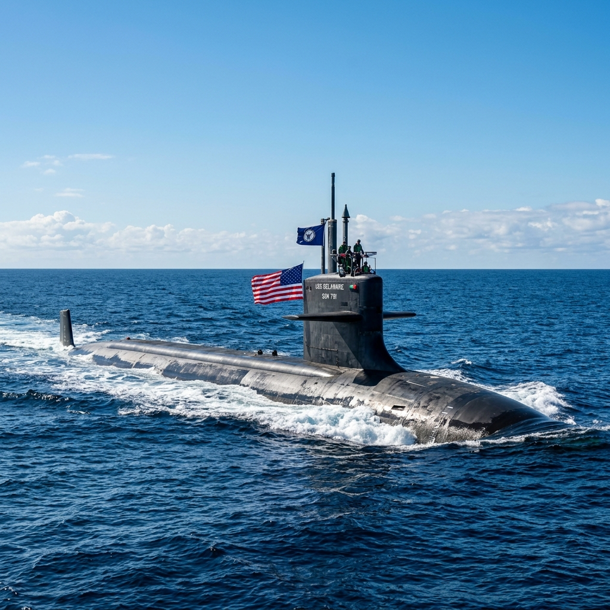

| Op Sindoor — Key Facts | Detail |
|---|---|
| Trigger | Pahalgam terror attack, Apr 22, 2025 — 26 killed; TRF (LeT proxy) |
| Launch | Night of May 6–7, 2025 — missiles/stand-off weapons on 9 terror sites |
| Headline targets | Bahawalpur (JeM HQ) • Muridke (LeT HQ) • sites in Muzaffarabad, Kotli, Bhimber, Rawalakot, Sialkot sectors |
| Duration | May 7–10, 2025 (≈87-88 hours of military action) |
| Star system | S-400 Triumf (claimed ~314 km kill); Akash SAMs; counter-drone grid |
| End | Ceasefire understanding May 10, 2025 via DGMO hotline |
| Significance | Deepest Indian strikes in Pakistan since 1971; new "normal" of punitive response to terror |
BPSC loves missile↔range matching. Learn the ladder below, then drill every system (propulsion, user service, status) on the detailed missiles subpage.
| System | Type | Range / Key Fact | Status (mid-2026) |
|---|---|---|---|
| Agni-I | Short-range ballistic (SRBM) | 700 km | In service — Strategic Forces Command (SFC) |
| Agni-II | Medium-range ballistic (MRBM) | 2,000+ km | In service — SFC |
| Agni-III | Intermediate-range ballistic (IRBM) | 3,000+ km | In service — SFC |
| Agni-IV | IRBM | 4,000 km | In service — SFC |
| Agni-V | ICBM-class (canister-launched) | 5,000+ km; MIRV-tested under Mission Divyastra (Mar 2024) | Induction phase — SFC |
| Agni-P (Prime) | New-gen canisterised MRBM | 1,000–2,000 km | Successfully tested |
| Prithvi-II | SRBM (liquid-fuel) | 350 km | In service — SFC |
| BrahMos | Supersonic cruise (Mach ~2.8–3) | 290 km baseline; extended ~450–800 km variants; India–Russia JV (BrahMos Aerospace) | In service (Army, Navy, IAF); first export: Philippines (2022, $375 mn) |
| Akash / Akash-NG | Surface-to-air missile (SAM) | 25–30 km / 70–80 km (NG) | Akash in service (starred in Op Sindoor); Akash-NG in trials |
| MRSAM | SAM (DRDO–IAI Israel JV) | 70 km | In service (Army, IAF, Navy as Barak-8) |
| Astra (Mk1) | Beyond-visual-range air-to-air (BVRAAM) | 100+ km | In service (Su-30MKI, Tejas); Mk2/Mk3 in development |
| Pinaka | Multi-barrel rocket launcher (MBRL) | 40–75 km (guided Pinaka 75+ km) | In service; exported to Armenia |
| Pralay | Quasi-ballistic tactical missile | 150–500 km | Cleared for induction (Army & IAF orders) |
| Nirbhay | Subsonic cruise missile | ~1,000 km | Tested; technology feeds Long-Range LACM programme |
| VSHORADS | Man-portable air defence (MANPADS) | ~6 km | Successfully tested (DRDO) |
| ET-LDHCM | Long-range hypersonic cruise missile | ~1,500 km; scramjet-powered | Tested Nov 16, 2024 (Dr APJ Abdul Kalam Island) |
| S-400 Triumf | Long-range SAM (Russia) | Engages targets up to ~400 km | 5 squadrons ordered (Oct 2018, $5.43 bn); deliveries ongoing; starred in Op Sindoor; India seeks additional squadrons + missiles (~₹10,000 cr) post-Sindoor |
| Platform | Category | Key Fact |
|---|---|---|
| Tejas Mk1A / Mk2 | Light combat aircraft (HAL) | Mk1A: GE F404 engines, 83 ordered; Mk2: GE F414 with ~80% Transfer of Technology (deal signed during PM's 2023 US visit) |
| LCH Prachand | Light combat helicopter (HAL) | Inductions from 2022; 156 ordered (Army 90 + IAF 66, ~₹62,700 cr cleared Mar 2025) |
| Dhruv (ALH) | Advanced light helicopter (HAL) | Backbone utility helicopter of all three services |
| MBT Arjun | Main battle tank (DRDO–CVRDE) | 71st BPSC PYQ: indigenous (unlike F-35); Arjun Mk1A ordered (118 units) |
| ATAGS | 155 mm/52-cal towed artillery (DRDO–Bharat Forge/Tata) | 71st BPSC PYQ; ~40+ km range; 307 guns ordered (₹6,900 cr, Mar 2025) |
| Dhanush | 155 mm/45-cal towed gun | Indigenised Bofors derivative; in Army service |
| Zorawar | 25-tonne light tank (DRDO + L&T) | Designed for high-altitude Ladakh deployment; trials under way |
| INS Vikrant (IAC-1) | Aircraft carrier (Cochin Shipyard) | Commissioned Sep 2, 2022; ~45,000 t; first indigenously designed & built carrier |
| Project 17A frigates | Stealth frigates (GRSE/MDL) | Lead ship INS Nilgiri commissioned Jan 15, 2025; 7 ships planned |
| Kalvari (Scorpene) class | Diesel-electric submarines (MDL + Naval Group) | 6 boats; 6th — INS Vaghsheer commissioned Jan 15, 2025 |
| Arihant-class SSBN | Nuclear-powered ballistic-missile subs | INS Arihant + INS Arighaat (commissioned Aug 29, 2024) — sea leg of the nuclear triad |
| C-295 transport | Tata–Airbus, Vadodara FAL | 56 aircraft; first private-sector military aircraft plant in India (Vadodara, Gujarat) |
| Project 75I | Next-gen conventional submarines | 6 AIP-equipped boats — pending final contract (MDL–TKMS bid) |
| Exercise | Partner(s) | Service / Type | Latest Edition Note |
|---|---|---|---|
| Malabar | Quad: US, Japan, Australia | Naval | 2024: Visakhapatnam/Bay of Bengal; 2025: hosted by US off Guam |
| Yudh Abhyas | United States | Army | 2025 (21st): Fort Wainwright, Alaska |
| JIMEX | Japan | Naval | JIMEX-24: Yokosuka, Japan (70th BPSC PYQ) |
| Dharma Guardian | Japan | Army | Annual; alternates India/Japan |
| Varuna | France | Naval | 2025 (23rd): off Goa — carriers INS Vikrant & Charles de Gaulle |
| Garuda | France | Air | 2024: Mont-de-Marsan AFB, France |
| Shakti | France | Army | 2024: Umroi, Meghalaya |
| Surya Kiran | Nepal | Army | 18th (Dec 2024–Jan 2025): Saljhandi, Nepal |
| Mitra Shakti | Sri Lanka | Army | 10th (2024): Pune |
| Khanjar | Kyrgyzstan | Special Forces | 12th (Mar 2025): Tokmok, Kyrgyzstan |
| KAZIND | Kazakhstan | Army | Annual (8th ed 2024: Auli, Uttarakhand) |
| Desert Cyclone | UAE | Army | 1st (Jan 2024): Mahajan, Rajasthan |
| Indra | Russia | Army / tri-service | 2025: Mahajan Field Firing Range, Rajasthan |
| Ajeya Warrior | United Kingdom | Army | Biennial; alternates India/UK (7th ed 2023: Salisbury Plain, UK) |
| Hand-in-Hand | China | Army (counter-terror) | Suspended since 2020 (last: 2019, Umroi, Meghalaya) |
| Nomadic Elephant | Mongolia | Army | Annual |
| Ekuverin | Maldives | Army | Annual |
| Sampriti | Bangladesh | Army | Annual |
| Tarang Shakti | Multilateral (~11 nations) | IAF — air exercise | 1st edition (Aug–Sep 2024): Sulur (TN) & Jodhpur (Raj) — largest air exercise hosted by India |
| Milan | Multilateral (~50 navies) | Naval | Biennial; 2024: Visakhapatnam |
| Post | Incumbent | In Office Since |
|---|---|---|
| Chief of Defence Staff (CDS) | General Anil Chauhan (2nd CDS; also Secretary, Dept of Military Affairs) | Sep 30, 2022 |
| Chief of the Army Staff (COAS) | General Upendra Dwivedi | Jun 30, 2024 |
| Chief of the Naval Staff (CNS) | Admiral Dinesh K. Tripathi | Apr 30, 2024 |
| Chief of the Air Staff (CAS) | Air Chief Marshal A.P. Singh | Sep 30, 2024 |
| DRDO Chairman | Dr Samir V. Kamat | Aug 2022 |
The 72nd BPSC's single most probable defence question. Memorise dates and pairings (TRF↔LeT, Bahawalpur↔JeM, Muridke↔LeT).
| System | Type | Range / Key Fact | Status |
|---|---|---|---|
| Agni-I | SRBM | 700 km | In service |
| Agni-III | IRBM | 3,000+ km | In service |
| Agni-V | ICBM-class | 5,000+ km; MIRV (Mission Divyastra, Mar 2024) | Induction phase |
| Prithvi-II | SRBM | 350 km | In service |
| BrahMos | Supersonic cruise | 290 km → 450–800 km extended; Mach ~3 | In service; exported |
| Akash-NG | SAM | 70–80 km | Trials |
| MRSAM | SAM (DRDO–IAI) | 70 km | In service |
| Astra Mk1 | BVRAAM | 100+ km | In service |
| Pinaka (guided) | MBRL | 75+ km | In service; Armenia export |
| Pralay | Quasi-ballistic | 150–500 km | Induction cleared |
| Nirbhay | Subsonic cruise | ~1,000 km | Tested |
| S-400 Triumf | Long-range SAM (Russia) | ~400 km envelope; $5.43 bn / 5 squadrons (2018) | Deliveries ongoing; Op Sindoor star |
| ET-LDHCM | Hypersonic cruise | ~1,500 km, scramjet | Tested Nov 2024 |
| Mission Shakti (ASAT) | Anti-satellite (PDV-Mk II) | ~300 km LEO intercept, Mar 27, 2019 | 4th nation to demo ASAT |
| BMD Phase-II (AD-1/AD-2) | Ballistic-missile interceptors | Exo + endo-atmospheric shield | AD-1 (Nov 2022) & AD-2 (Jul 2024) tested |
| INS Vikrant | Aircraft carrier (IAC-1) | ~45,000 t; Cochin Shipyard | Commissioned Sep 2022 |
| INS Arighaat | SSBN (Arihant class) | Nuclear triad sea leg | Commissioned Aug 2024 |
| INS Nilgiri (P17A) | Stealth frigate | Lead ship of Project 17A | Commissioned Jan 2025 |
